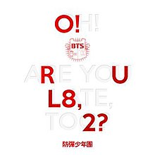
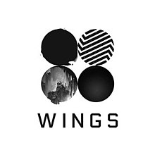
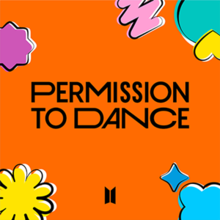
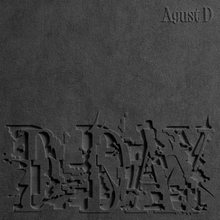

BTS (Hangul: 방탄소년단; Hanja: Bangtan Sonyeondan) atau Bangtan Boys adalah grup vokal pria asal Korea Selatan. Grup ini beranggotakan tujuh orang, antara lain RM, J-Hope, Suga, Jin, V, Jungkook, dan Jimin, yang dikelola oleh Big Hit Music. Nama tersebut kemudian berakronim menjadi Beyond The Scene pada Juli 2017. Pada 12 Juni 2013, mereka membawakan lagu berjudul "No More Dream" dari album awal mereka "2 Cool 4 Skool"yang mendukung debut mereka pada 13 Juni 2013.
Nama grup, BTS, merupakan singkatan dari ekspresi Korea Bangtan Sonyeondan (Hangul: 방탄소년단; Hanja: 防彈少年團), secara harfiah berarti "Bulletproof Boy Scouts". Nama itu dikonseptualisasikan dengan pemikiran bahwa BTS akan memblokir stereotip, kritik, dan harapan yang menargetkan remaja seperti peluru dan melindungi nilai-nilai dan cita-cita remaja saat ini. Di Jepang, mereka dikenal sebagai Bōdan Shōnendan (防弾少年団), yang diterjemahkan sama. Pada Juli 2017, BTS menambahkan sebagai tambahan dari Bangtan Sonyeondan atau Bulletproof Boy Scouts, nama ini juga merupakan singkatan dari "Beyond the Scene" sebagai bagian dari identitas baru mereka.Tambahan nama mereka berarti "BTS merupakan orang muda yang tumbuh yang melampaui realitas yang mereka hadapi, dan maju."
BTS memiliki fandom terbesar di dunia dengan ARMY (Adorable Representative Mc for Youth).Army dalam bahasa Inggris berarti 'tentara', pengertian ini diselaraskan dengan nama Bangtan Boys yang bermakna baju anti-peluru. Grup ini Juga memiliki warna fandom tersendiri yaitu UNGU. Dan memiliki slogan tersendiri yaitu BORAHE atau I PURPLE U yang artinya mari saling mencintai untuk waktu yang lama, di buat oleh V dalam salah satu konser mereka.
| Foto | Nama Asli | Nama Panggilan/Panggung | Posisi | Tempat, Tanggal Lahir | |
|---|---|---|---|---|---|
| Kim Namjoon (김남준) | RM (Real Me) | Leader & Main Rapper | Ilsan, 12 September 1994 (29) | rkive | |
| Kim Seok Jin (김석진) | Jin (진) | Vokalis & Visual | Anyang, 4 Desember 1992 (31) | jin | |
| Min Yoon Gi (민윤기) | Suga (슈가) | Lead Rapper | Deagu, 9 Maret 1993 (30) | agustd | |
| Jung Ho Seok (정호석) | J-Hope (제이홉) | Main Dancer, Rapper, Sub Vocalist | Gwangju, 18 Febuari 1994 (29) | uarmyhope | |
| Park Ji Min (박지민) | Jimin (지민) | Main Dancer, Lead Vocalist | Busan, 13 Oktober 1995 (28) | j.m | |

|
Kim Tae Hyung (김태형) | V (뷔) | Lead Dancer, Vocalist, Visual | Daegu,30 Desember 1995 (28) | thv |
| Jeon Jung-Kook (전정국) | Jungkook (정국) | Main Vocalist, Lead Dancer, Sub Rapper, Maknae | Busan, 1 September 1997 (26) | none |
| Digital Cover | Nama Album | Deskripsi | Tanggal Rilis |
|---|---|---|---|
| 2 COOL 4 SKOOL | 2 Cool 4 Skool adalah album singel debut BTS melalui Big Hit Entertainment dan didistribusikan oleh Loen. Album ini didukung oleh singel "No More Dream" dan "We Are Bulletproof Pt.2". Secara komersial, itu memuncak di nomor lima di Tangga Album Gaon di Korea Selatan, dan di nomor sepuluh di Tangga Album Dunia Billboard di Amerika Serikat. Album ini telah terjual lebih dari 430.000 eksemplar per Januari 2022. | 12 Juni 2013 | |
|  | O!RUL8,2? | O!RUL8,2? (dibaca Oh! Are you late, too?) adalah album mini pertama dari Bangtan Boys. Album ini dirilis sebagai kelanjutan dari album singel 2 Cool 4 Skool. Album ini terdiri dari 10 lagu dengan "N.O" sebagai singel utama. BTS kemudian mempromosikan "The Rise of Bangtan" sebagai singel kedua album. | 11 September 2013 |
| SKOOL LUV AFFAIR | Skool Luv Affair adalah album mini kedua Bangtan Boys. Album ini berisi 10 lagu dengan "Boy in Luv" sebagai lagu utama. Pada bulan April, grup ini mempromosikan "Just One Day" sebagai singel kedua dari album. Versi repackaged dirilis pada 14 Mei dengan tambahan dua lagu baru, yakni "Miss Right" dan "Like (좋아요)[Slow Jam Remix]". | 12 Februari 2014 | |
| DARK & WILD | Dark & Wild merupakan album studio pertama Bangtan Boys. Album ini berisi 14 lagu dengan "Danger" sebagai lagu utama. Grup ini kemudian mempromosikan "War of Hormone" sebagai singel kedua dari album. | 19 Agustus 2014 | |
| THE MOST BEAUTIFUL MOMENT IN LIFE PT.1 | The Most Beautiful Moment in Life, Part 1 (Hangul: 화양연화 pt.1; Hwa Yang Yeon Hwa pt.1) adalah album mini ketiga dari Bangtan Boys. Album ini dirilis dalam dua versi. Album ini berisi 9 lagu dengan single utama "I Need U". Pada bulan Juni, BTS mempromosikan singel kedua "Dope". | 29 April 2015 | |
| THE MOST BEAUTIFUL MOMENT IN LIFE PT.2 | The Most Beautiful Moment in Life, Part 2 (Hangul: 화양연화 pt.2; Hwa Yang Yeon Hwa pt.2) adalah album mini keempat Bangtan Boys. Album mini ini direkam pada tahun 2015 dan merupakan bagian kedua serta kelanjutan dari album mini The Most Beautiful Moment In Life, Part 1. Album dirilis dalam dua versi dan berisi sembilan lagu dengan "Run" sebagai singel utama. Di Korea Selatan, The Most Beautiful Moment in Life, Part 2 menjadi album dengan penjualan terbaik ke-5 pada tahun 2015. | 30 November 2015 | |

|
THE MOST BEAUTIFUL MOMENT IN LIFE : YOUNG FOREVER | The Most Beautiful Moment in Life: Young Forever (Hangul: 화양연화 Young Forever; RR: Hwayang-yeonhwa Young Forever) adalah album kompilasi pertama dari BTS. Album spesial ini dengan tiga video musik pendukung. Album ini berisi lagu-lagu dari dua album mini mereka yang dirilis tahun 2015, The Most Beautiful Moment In Life, Part 1 dan The Most Beautiful Moment In Life, Part 2, tiga lagu tambahan dan beberapa versi remix. | 2 Mei 2016 |
|  | WINGS |
Wings adalah album studio BTS berbahasa Korea ke-2 dan ke-4 secara keseluruhan. Album ini dirilis atas nama Big Hit Entertainment. Album ini memiliki empat versi, berisi lima belas lagu, dengan "Blood Sweat & Tears" sebagai singel utamanya. Terpengaruhi dari novel Demian karya Hermann Hesse, album ini membawakan tema yang membahas hawa nafsu dan pertumbuhan. Kemudian diterbitkan lagi sebagai album repackaged berjudul You Never Walk Alone, sabagai kelanjutan kanon album Wings. Tiga lagu baru ditambahkan ke daftar lagunya, serta "Spring Day" dan "Not Today" yang dipromosikan sebagai singel utama.
Kedua versi album menerima ulasan positif dari para kritikus. Dan menjual lebih dari 1,8 juta salinan album fisik di seluruh dunia, yang mencapai rekor penjualan tertinggi saat itu. Hal ini membuat BTS menyandang gelar "penjual jutawan", karena berhasil meraup keuntungan yang sangat besar. Berdasarkan Gaon Chart, Wings merupakan album terlaris di Korea pada 2016. |
10 Oktober 2016 |

|
YOU NEVER WALK ALONE | YOU NEVER WALK ALONE melengkapi kisah masa muda dan pertumbuhan yang tidak bisa semuanya dimuat dalam album WINGS. Sedangkan The most beautiful moment in life series dan WINGS adalah narasi masa muda dan pertumbuhan, bab tambahan WINGS ini adalah pesan penghiburan hangat dan harapan bagi kaum muda yang menderita dari generasi ini. | 13 Februari 2017 |
| LOVE YOURSELF承 'HER' | Love Yourself: Her (ditulis bergaya sebagai LOVE YOURSELF 承 'Her') adalah album mini kelima dari BTS. Album mini ini dirilis oleh Big Hit Entertainment. Album ini dirilis dalam empat versi, dan berisi sembilan lagu dengan "DNA" sebagai singel utama. Selain itu, ada dua lagu tersembunyi yang hanya tersedia di album fisik. | 18 September 2017 | |

|
LOVE YOURSELF 轉 'TEAR' | Love Yourself 轉 'Tear' (ditulis sebagai LOVE YOURSELF 轉 'Tear') adalah album studio berbahasa Korea ketiga (enam secara keseluruhan) oleh BTS. Album ini dirilis oleh Big Hit Entertainment. Album ini merupakan album penuh berbahasa Korea ketiga dari grup ini, setelah album tahun 2016, Wings. | 18 Mei 2018 |

|
LOVE YOURSELF 結 'ANSWER' | Love Yourself 結 'Answer' (ditulis sebagai LOVE YOURSELF 結 'Answer') adalah album kompilasi berbahasa Korea kedua dari BTS. Konsep album ini terdiri dari fitur momen pasca-putus dari membuang ego palsu dan menghadapi diri sejati.Album ini dirilis oleh Big Hit Entertainment dan akan tersedia dalam 4 versi yang berbeda: S, E, L dan F. Album ini terdiri dari dua puluh lima lagu, termasuk tujuh lagu baru. Kebanyakan lagu berasal dari Love Yourself: Her, dan Love Yourself: Tear, serta beberapa lagu remiks. | 24 Agustus 2018 |
| MAP OF THE SOUL : PERSONA | Map of the Soul: Persona adalah album mini keenam dari grup vokal BTS. Album ini direncanakan akan dirilis oleh Big Hit Entertainment. Album ini merupakan lanjutan dari album mereka dari tahun 2018 Love Yourself: Tear dan Love Yourself: Answer, dan akan mendahului tur dunia grup ini, BTS World Tour Love Yourself: Speak Yourself. Album ini dirilis untuk pra-pemesanan pada tanggal 13 Maret. | 12 April 2019 | |
| MAP OF THE SOUL : 7 | Map of the Soul: 7 adalah album studio keempat berbahasa Korea dari BTS. Album ini dirilis oleh Big Hit Entertainment, dan merupakan kelanjutan dari Map of the Soul: Persona yang dirilis pada tahun sebelumnya. | 21 Februari 2020 | |

|
DYNNAMITE |
Dynamite (bahasa Indonesia: "Dinamit") adalah lagu milik BTS, dirilis melalui Big Hit Entertainment dan Sony Music. Lagu ini menjadi lagu pertama BTS yang berbahasa inggris.Lagu ini ditulis oleh David Stewart dan Jessica Agombar dan diproduseri juga oleh Stewart. "Dynamite" adalah lagu disko-pop upbeat dengan elemen funk dan soul.
Dynamite memulai debutnya di nomor satu di tangga lagu Billboard Hot 100, menjadi single nomor satu di Amerika Serikat menjadikan BTS artis Korea Selatan pertama yang menduduki puncak Hot 100. Lagu tersebut terjual sebanyak 265.000 unduhan di minggu pertama, menandai minggu penjualan murni terbesar sejak "Look What You Made Me Do" Taylor Swift (2017). |
21 Agustus 2020 |

|
BE | BE adalah album studio berbahasa Korea kelima dan kesembilan secara keseluruhan oleh BTS. Album ini dirilis pada tanggal , melalui Big Hit Entertainment, sembilan bulan setelah pendahulunya, Map of the Soul: 7. Album ini dibuat sebagai tanggapan terhadap pandemi Covid-19 yang sedang berlangsung. BE terinspirasi oleh pemikiran dan perasaan yang dialami BTS selama konsepsi proyek. Rekaman tersebut melihat anggota grup ini berkontribusi pada berbagai aspek album termasuk penulisan lagu, pengembangan, produksi, aspek visual, dan pengarahan. | 20 November 2020 |

|
BUTTER | Butter dirilis sebagai single digital, melalui Big Hit Music dan Sony Music Entertainment. Ini adalah single berbahasa Inggris kedua milik band ini. Lagu bergenre Disco-pop, dance-pop, dan EDM ini, ditulis oleh Jenna Andrews, Robert Grimaldi, Stephen Kirk, RM, Alex Bilowitz, Sebastian Garcia, dan Ron Perry, dengan produksi Grimaldi, Kirk, dan Perry. | 21 Mei 2021 |
|  | PERMISION TO DANCE | Permission to Dance dirilis melalui Big Hit Music dan Sony Music pada , sebagai singel yang berdiri sendiri. Lagu ini disertakan sebagai bagian dari rilis CD singel grup sebelumnya "Butter", dan merupakan singel ketiga berbahasa Inggris oleh band ini. Lagu ini mencapai puncak tangga lagu di lima negara dan mencapai sepuluh besar di sepuluh wilayah lainnya. | 9 Juli 2021 |
| PROOF | Proof adalah album antologi pertama yang telah dirilis oleh BTS, melalui Big Hit Music. Single utama album, "Yet to Come (The Most Beautiful Moment)", dirilis pada hari yang sama. | 10 Juni 2022 | |

|
TAKE TWO |
BTS merilis lagu Take Two untuk merayakan anniversary debutnya yang ke-10 pada 13 Juni 2023. BTS ingin menyampaikan apresiasi mereka kepada ARMY atas semua cinta yang telah mereka berikan. Take Two juga menjadi pengingat bahwa BTS telah memasuki babak kedua setelah melalui perjalanan selama satu dekade sebagai boyband K-Pop.
Selain itu, judul lagu tersebut juga mewakili pesan yang digambarkan melalui liriknya. Take Two merupakan ungkapan dalam dunia perfilman yang digunakan saat pengambilan adegan untuk kedua kalinya. Melalui Take Two, BTS menyiratkan bahwa kisah antara mereka dan ARMY begitu indah sehingga mereka ingin melakukannya lagi dan menikmatinya untuk kedua kalinya. |
9 Juni 2023 |
| INDIGO |
Indigo adalah album studio debut oleh RM, dirilis melalui Big Hit Music. Album ini menandai karya lengkap pertama sang rapper sejak Mono (Mixtape 2018) dan berfungsi sebagai dokumentasi atau arsip usia akhir dua puluhan. Terdiri dari 10 lagu, termasuk penampilan oleh Erykah Badu, Anderson .Paak, Tablo dari Epik High, Kim Sa-wol, Paul Blanco, Mahalia, Colde, Youjeen dari Cherry Filter, dan Park Ji-yoon. Lagu kesembilan, "Bunga Liar", sebuah kolaborasi dengan Youjeen, dirilis bersamaan dengan album sebagai single utamanya, bersama dengan video musik yang menyertainya.
Album memuncak di nomor dua di Korea Selatan, nomor tiga di Lituania, Portugal, dan Amerika Serikat; dan nomor empat di Jepang. Itu disertifikasi double platinum oleh Asosiasi Konten Musik Korea dan telah terjual lebih dari 700.000 eksemplar di dalam negeri. Ini adalah album dengan charting tertinggi oleh solois Korea di Billboard 200 dan telah terjual lebih dari 100.000 unit di wilayah itu. |
2 Desember 2022 | |
| THE ASTRONAUT |
"The Astronaut" adalah lagu Jin dari BTS sebagai single solo debutnya. Lagu ini ditulis bersama oleh: Jin; Band rock Inggris Coldplay, yang sebelumnya berkolaborasi dengan BTS di "My Universe"; DJ Kygo dari Norwegia, yang memproduseri lagu tersebut bersama Bill Rahko; dan putra Chris Martin, Moses Martin. Lagu ini tentang kasih sayang dan hubungan Jin dengan para penggemarnya. Itu mengeksplorasi tema koneksi dan cinta melalui penggunaan motif kosmik berulang yang disukai oleh band dan penyanyi, sebagaimana dibuktikan dalam lagu lain yang mereka tulis.
Digambarkan sebagai "hadiah untuk penggemar", itu dirilis sebelum pendaftaran Jin, yang terjadi tak lama kemudian. Single ini tersedia secara digital dan dalam format CD. Video musik yang menyertai menggambarkan penyanyi itu sebagai astronot alien yang secara tidak sengaja mendarat di Bumi dan akhirnya harus memilih antara tinggal bersama keluarga yang ditemukannya atau kembali ke planet asalnya. |
28 Oktober 2022 | |
| JACK IN THE BOX | Jack in the Box adalah album studio J-Hope yang dirilis oleh Big Hit Music pada . Berisi 10 lagu, dengan "More", singel utama yang dirilis lebih awal pada 1 Juli, diikuti "Arson", singel yang dirilis di hari yang sama dengan albumnya. Konsep album ini kurang lebih membawakan kisah kotak Pandora, dan membicarakan tema seputar minat, ambisi, kemanusiaan, ketidakamanan, keberhasilan, dan kecemasan akan masa depan. Selain menawarkan old-school hip hop sebagai fokus utamanya, album ini juga mencampurkan genre lain semacam pop, grunge, dan R&B. | 15 Juli 2022 | |
| ON THE STREET |
"On the Street" adalah lagu J-Hope dari BTS dan rapper Amerika J. Cole. Itu dirilis sebagai single digital melalui Big Hit Music. Lagu hip hop lofi, lagu itu ditulis oleh J-Hope, Cole, dan Pdogg, yang juga bertindak sebagai produser. Secara lirik, lagu tersebut merupakan syair dari akar artistik J-Hope dan gabungan dari kecintaannya pada tarian jalanan dan hip hop. Syair Cole mengikuti tema serupa, merinci perjalanannya sebagai seniman dan evolusi keahliannya.
Video musik yang menyertai menunjukkan J-Hope berjalan dan menari melalui jalan-jalan Kota New York kemudian di stasiun kereta bawah tanah Bowery sementara Cole terlihat berdiri dan menari di atap gedung kota. Digambarkan sebagai "hadiah" untuk para penggemarnya, single tersebut menandai perilisan musik terakhir J-Hope sebelum ia memulai wajib militernya. |
3 Maret 2023 | |
|  | D-DAY | D-Day adalah album studio debut Agust D, atau lebih dikenal sebagai Suga BTS. Album ini dirilis melalui Big Hit Music sebagai album ketiga dalam trilogi yang berisi mixtape Agust D (2016) dan D-2 (2020). Berisikan 10 lagu, album ini menampilkan kemunculan anggota sesama BTS, J-Hope, dan IU, Ryuichi Sakamoto, dan Woosung dari the Rose. Dua singel dirilis sebagai promosi untuk proyek tersebut: "People Pt. 2" menampilkan IU yang dirilis pada 7 April, dan "Haegeum", yang dirilis bersamaan dengan album. Kedua singel tersebut mempunyai video musik masing-masing. Singel ketiga berjudul "Amygdala" juga dirilis dengan video musiknya pada 24 April. | 21 April 2023 |
| FACE | FACE adalah album debut dari Jimin. Album ini terdiri dari enam lagu, termasuk singel utama "Set Me Free Pt. 2" yang dirils pada 17 Maret dan singel berikutnya, "Like Crazy" yang dirilis pada hari yang sama dengan album, video musik akan mengiringi kedua single tersebut. | 24 Maret 2023 | |
| WAKE UP | Wake Up adalah album studio Jepang pertama Bangtan Boys.Album ini berisi 13 lagu termasuk versi bahasa Jepang dari "No More Dream", "Boy in Luv", dan "Danger", serta dua lagu baru "The Stars" dan "Wake Up". Album ini memuncak di peringkat 2 tangga lagu Oricon. | 24 Desember 2014 | |
| YOUTH | Youth adalah album studio Jepang kedua dan album ketiga secara keseluruhan oleh BTS. Album ini memiliki 13 lagu. | 7 September 2016 | |
| FACE YOURSELF | Face Yourself adalah album studio berbahasa Jepang ketiga (kelima secara keseluruhan) BTS. Album ini terdiri dari 12 lagu secara keseluruhan, delapan lagu merupakan versi bahasa Jepang dari lagu-lagu yang sebelumnya dirilis pada album dari tahun 2016 Wings dan album mini tahun 2017 Love Yourself: Her, dan tiga lagu original bahasa Jepang: "Don't Leave Me", "Let Go", dan "Crystal Snow", yang pertama kali dirilis pada Desember 2017. | 4 April 2018 | |
| MAP OF THE SOUL: 7-THE JOURNEY | Map of the Soul: 7-The Journey adalah album studio berbahasa Jepang keempat dari BTS. Album berdurasi penuh pertama dari grup ini yang disajikan dalam bahasa Jepang dalam dua tahun sejak Face Yourself pada tahun 2018, album ini berisikan versi bahasa Jepang dari lagu-lagu dari Love Yourself: Answer (2018), Map of the Soul: Persona (2019), dan Map of the Soul: 7 (2020), serta empat lagu baru: dua instrumental, "Intro: Calling" dan "Outro: The Journey", dan dua lagu original, singel utama "Stay Gold", dan "Your Eyes Tell" yang ditulis oleh Jungkook. Singel yang sebelumnya dirilis pada tahun 2019 "Lights" juga termasuk. | 14 Juli 2020 | |
| BTS, THE BEST | BTS, THE BEST adalah album kompilasi ketiga berbahasa Jepang oleh BTS. Album ini dirilis pada tanggal melalui Def Jam Recordings dan Virgin Music, sublabel dibawah Universal Music Japan. | 16 Juni 2021 | |
| BTS WORLD (Original Soundtrack) | BTS World: Original Soundtrack adalah album soundtrack untuk game seluler Netmarble dengan nama yang sama. Dua hari setelah rilis game mobile, album ini menampilkan empat single BTS dan instrumental dari game tersebut. Perilisannya didahului oleh single "Dream Glow" (kolaborasi dengan penyanyi Inggris Charli XCX), "A Brand New Day" (kolaborasi dengan penyanyi Swedia Zara Larsson) dan "All Night" (kolaborasi dengan penyanyi rap dan penyanyi Amerika Juice Dunia). Pada tanggal 26 Juni, lagu "Heartbeat" diungkap dalam game setelah dirilis. Album debutnya di atas Tangga Album Gaon dan # 1 pertama mereka di Spanyol. Juga, ini menjadi soundtrack K-pop pertama yang debut di tangga lagu Billboard Top Soundtracks. | 28 Juni 2019 | |
|
|
~ ~ ~ | OST, Feat_BTS, dan lainnya. | ~ ~ ~ |
Anggota grup ini memiliki acara varienty show tersendiri yang dibuat khusus memang untuk mereka bernama RUn BTS. Acara yang cukup menyenangkan untuk ditonton disaat hari-hari yang kita lalui cukup melelahkan. Tingkah kocak mereka akan selalu mengundang tawa dengan berbagai hal yang mereka lakukan. Ragam Acara yang kreatif ini sudah dimulai dari tanggal 1 Agustus 2015. Namun, karena para anggota BTS sekarang sedang hiatus maka Run BTS juga sedang hiatus. Tetapi Run BTS sendiri sudah memiliki banyak sekali episode yang sangat seru-seru walau ditonton berulang kali \(^o^)/. Mari coba tonton keseruan mereka!!!
NEXT??!